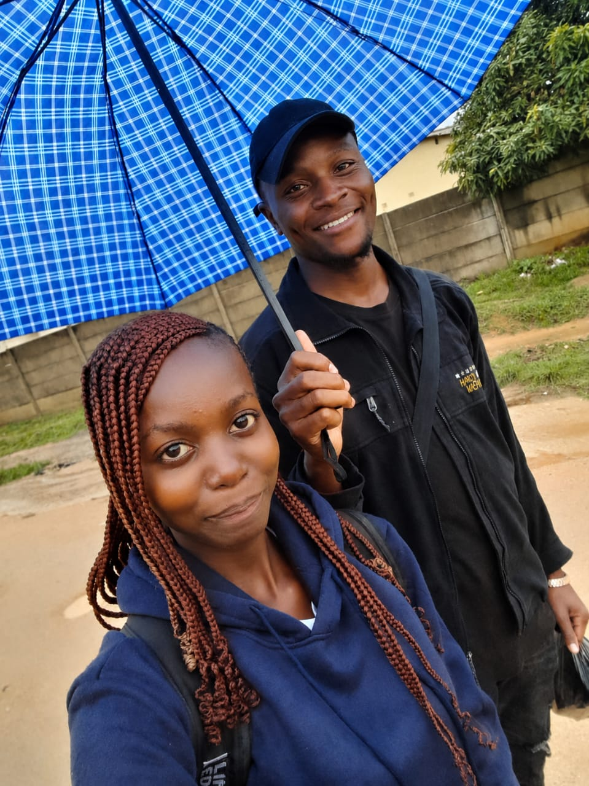
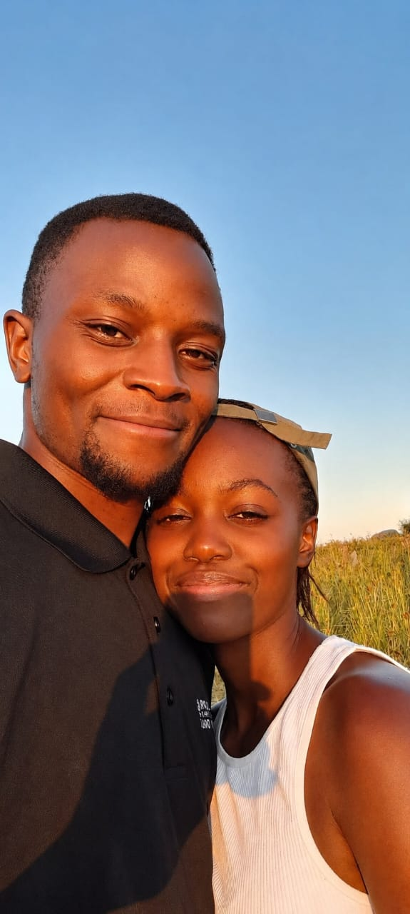
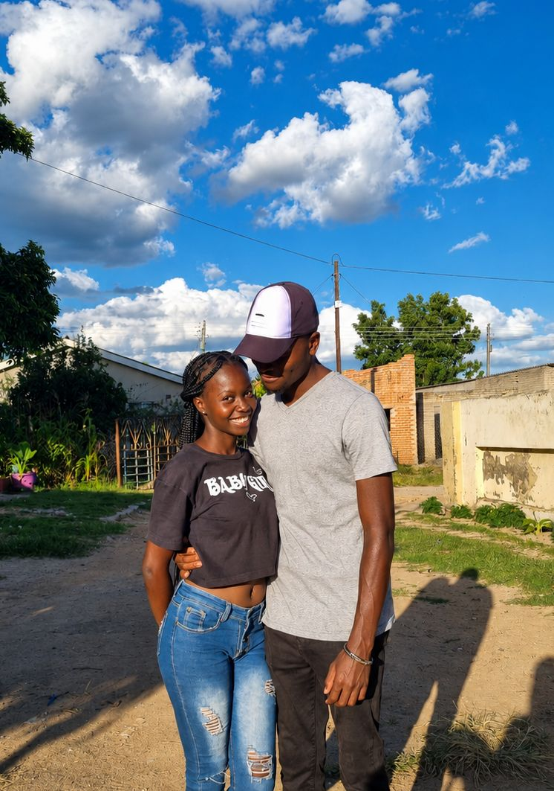
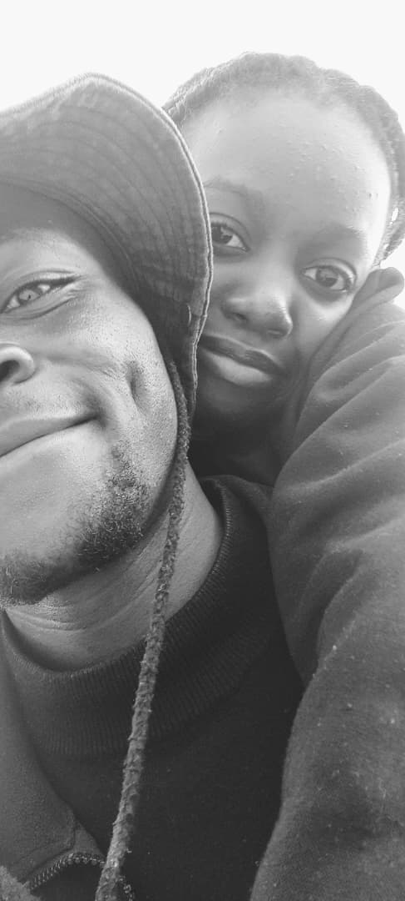
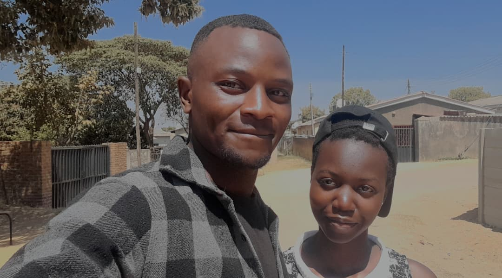

Yes word after another. One Page after the other... God's plans materialised yes, but that's what makes it special. Not because it followed a plan.... but because He allowed us to write it.
BEFORE there was an US
There was a me
And a you
Two lives moving in different directions, differnt routines, different dreams, different worries, different worlds.
But somehow, our paths crossed
and then
Our first meaningfull conversation was something like, "Hey my name is Timothy, the guy airidza siren last year aigara akapfeka hat.."Something like that... How confident😅. And kinda dumb🤦🏽♂️
Still rem it very well, it was on a Wednesday coming from work, iwewe uchibva kulesson. You were wearing a pink top... Musikana ainyara ndati😅. But here's something I never told you. I was actually nervous as hell that day, about what to say.. How to start conversing with you.. About how to act🤦🏽♂️...
I rem this saturday yandakauya kunokuona soo... Ndakatogeza ufunge😅, ndichiuya kunona bhebhi baba😅. You showed up and takatenderera neroad yekunobata mbuya nehanda tikadzoka nepa left turn. We talked about a bunch of things. (Surprising for people who were getting used to one another). But one of the conversations I rem from that day was one yawaiti unoda kuita musoja. It was only that your dad havadi chete😅😅😅. Briefly in my mind I was like ndozomukwanisa here mukadzi musoja. Apa that day kwaipisa🤦🏽♂️. I don't rem buying freezit zvaro. It's moments like those i feel useless....... Anyways that's not what I'm here for
The plan was to say it physically. I had prepared and rehearsed some lines😅. But when it came down to it? I chickened out😅😅...When the actual moment came I immediately convinced myself that pawhatsapp ndopaiita😅😅. But you gotta hand it to me though... Coz pakuzobvunza nyaya yangu ndaibvunza physically😅😅. I REALLY WISH I COULD WAKE UP ONE DAY IN THAT TIMELINE... It was special to me... Plus to probably fix something, something that version of me couldn't see🤦🏽♂️.
It's conversations like these that matter most to me, I remember not wanting them to end.

Waibva kuHarare this day. Bvandauya kunokutora murank. When I got there hauna kundiona, ndaive kumashure kwako apa iwewe uri busy hako kupenga pafon😅. Pawakazocheuka you kinda froze and I still have that image of you in my head...rent free. I won't forget what you told me afterwards...."Pese pandokuona ndonzwa kufara so. Ndonzwa kuda kukumhanyira ndokumbundira...asi ndonyara"😅. If there's a scenario I ever wished dai waisnyara? Ndiyo iyo😅. I still rem your oufit🤦🏽♂️. And no its not because of the pic😅. Takakwira Cherutombo/Nyameni tikaburukira pana Kundai, you said your dad was around so kufamba naNehanda would be risky, so takadzika naKundai tikazoenda naChinamhora... Here's a lil secrete.. At this point I had wished to be in the rain with you..weired right😅? I know😅. Well on this day that wish came true, and continued to do so for the days that were to follow😏
]Fast forward, somehow we thought we had figured it out . Not all.... but just enough to picture a future..
The one place where we thought everything was gonna pan out.
OR what ever arrangement ended up happening..
New cities. New stories. New memories.
Growing up and figuring out life side by side..The most important part of the plan.
Life knew the plans too. It just decided to draft a different route.
We had a direction. We had a plan. We had a future we thought we could see clearly.
If I knew everything that would happen beforehand... Would still choose you?
YESS
Every. Single. Time.
I don’t know exactly what comes next. I don’t know where life will place us.
Moments I never Left.
Frozen but still feel alive.

A pic so Random i can't help at loving it

A Special One

Kusvika Magumo

No doubt one of my most if not the difficult moments in life
I miss Looking in your eyes😭
I just had to😭😭😅
Well... If you're reading this now, it means you've made it through all of that. Though honestly, I didn't know what this website was going to turn into when I started building it. And I'm not even sure it accomplished every intention I had for it. When I began, it was just an idea. Like many other things. But along the way, it became a timeline. A collection of memories. A collection of thoughts. Some we may never get to say out loud. And maybe that's what this was supposed to be from the start. Not a project. Not something for our anniversary. But me. Painting Us the only way I know how to. Trying to shade in the parts of my mind that come alive whenever I think about you. Because I do. I think about the plans we made. The plans that never materialised. The conversations that lasted longger than they should have. The silences that somehow said enough. The silence that was meaningfull, and the one that hurt. The versions of us that existed yesterday, and the versions of us that are still becoming tomorrow. The fights. Those that scared the shii out of us And those that we resolved as soon as they beagan. Those that we could solve simply because we got to see each other. And those that escalate because we can't anymore. And through all of it, this strange realization keeps on proving itself. That Love was never really in the grand moments. No. Not entirely. It's in the choosing. The constant, ordinary, everyday choosing. Choosing to stay. Choosing to listen. Choosing to understand. Choosing each other, even when life becomes complicated. Choosing each other, even when everything we've always stood for is clouded by uncertainity. And most importantly then. I cannot promise that every road ahead will be easy. I cannot promise that distance, time, or circumstance will always be kind to us. It's gonna get hard. The minds are gonna create versions of us inorder to cope with the gaps and the vacuums But there is one thing I know for certain. That I'm here to stay. Not because life demanded it. Not because it would be easier. But because life feels natural with you, it feels easy, even when it's hard. Because you became part of what home feels like to me. Because you mean the World to me. So Babe, Ndimirirewo... If the journey has been about anything at all, then it is this: That before the plans. Before the detours. Before the uncertainty. Before all the questions. There was you. And after everything, There is still you. And Ooooh How I Miss you.. Happy ANNIVERSARY my LOVE. I LOVE YOU Papie❤️